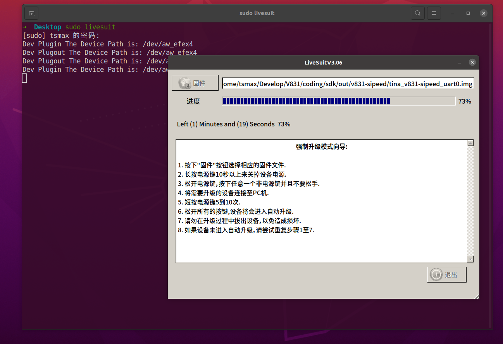

MaixII M2dock 烧录系统
！！！一定要严格按照步骤操作！！！请使用大于 1G 的 TF/SD 卡进行烧录，开源版本要求使用 TF/SD 卡来启动系统。
V831 为全志的 SOC， 所以 Windwos 使用 PhoenixSuit, Linux 上使用 Livesuit 烧录镜像文件。
从下载站获取最新的 V831 系统镜像 SDK_MaixII/release ，找不到就搜索 V831 获取最新的镜像。
下载站中有连个同版本不同大小的镜像系统，文件较大的镜像是需要使用dd命令进行系统的烧录。（目前只能在linux系统上进行系统的烧录--2021.06.26）
解压 V831 镜像压缩包，得到一个 xxxx.img 文件。
从网上获取 PhoenixSuit(Windows) 烧录工具。
镜像文件命名方式
对于V831的镜像文件名字是有对应的规则，以后大家可以根据自己的需求来进行下载
就拿maixpy3-v831-800m-64m-512m-sp2305_240240_20210729这镜像文件来说
| 名称 | 含义 |
|---|---|
| maixpy3 | 支持MaixPy3进行开发 |
| v831 | 支持的V831芯片上运行 |
| 800m | 主频为800MHz |
| 64m | RAM为64MB |
| 512m | 对于tf卡容量的最低要求 |
| sp2305 | 适用于型号为sp2305的摄像头 |
| 240240 | 屏幕的输出分辨率为240*240 |
| 20210729 | 镜像的发布时间 |
如果是适合使用dd进行烧录，会在最前面多个dd
Windows 上使用 PhoenixCard烧录镜像
PhoenixSuit和PhoenixCard是全志芯片常用的两种烧录工具，一个是USB烧录，另一个是sd卡烧录。对于需要烧录到flash中的，常用PhoenixSuit，而使用sd卡的在用PhoenixSuit需要安装USB驱动等一系列的麻烦操作，就可以使用PhoenixCard进行烧录。
获取烧录工具
PhoenixCard下载站连接：下载站 - Sipeed
系统镜像下载站连接：下载站 - Sipeed
SD Card Formatter下载连接：SD Card Formatter
系统烧录
插入sd卡，打开SD Card Formatter

Refresh后点击Format后格式化，注意选中对应的sd卡；
打开PhoenixCard,固件处选择对应镜像包（下载镜像后需要先解压），然后刷新盘符，如果未找到可以尝试重新插拔下SD卡，勾选启动卡，点击烧卡。

大概30s后，烧录完成。

Linux(Ubuntu) 使用 Livesuit 烧录
安装烧录工具 Livesuit
每次更新系统 linux kernel 之后需要重新安装软件
- 安装依赖 dkms
sudo apt install dkms
- 安装 libpng1.2（一定要使用这个版本）
wget http://archive.ubuntu.com/ubuntu/pool/main/libp/libpng/libpng_1.2.54.orig.tar.xz
tar xvf libpng_1.2.54.orig.tar.xz
cd libpng-1.2.54
./autogen.sh
./configure
make -j8
sudo make install
更新链接库:
sudo ldconfig
- 安装 livesuit
git clone --recursive https://github.com/QinYUN575/allwinner-livesuit.git
cd allwinner-livesuit
chmod +x livesuit_installer.run
sudo ./livesuit_installer.run
使用 Livesuit 烧录
sudo livesuit 打开烧录工具，并点击“固件”选择镜像文件
不插入 SD 卡，将 V831 USB OTG 接口连接到 PC, 提示是否格式化分区，这时候插入 SD 卡，之后点击 YES

等待烧录完成，提示“固件升级成功”，即可断开 USB ，至此固件烧录完毕


以上烧录方式适合在镜像文件较小的那个（非dd版本）
Windows使用dd烧录
下载dd镜像带有xx-dd文件即可
下载Etcher
首先使用SD Card Formatter格式化sd卡，然后打开软件，点击Flash from file,选中dd镜像包，然后点击Select target选中sd卡，最后点击Flash烧录。

烧录完毕后，即可放入M2 dock中运行。
分区扩容（dd）
使用dd镜像后，会有部分储存空间未被使用，这时候需要扩容分区进行使用。
linux下可以用fdisk或者GParted扩容，windows下可以尝试使用Diskgenus扩容（不推荐使用windows，可能会造成一些问题）
这里以fdisk示例，其他方法请自行摸索。
将sd卡插入电脑，执行sudo fdisk -l，查看sd卡分区位置，如下即为/dev/sdb；
/dev/sdb1 49152 49663 512 256K Microsoft basic data
/dev/sdb2 49664 61951 12288 6M Microsoft basic data
/dev/sdb3 61952 324095 262144 128M Microsoft basic data
/dev/sdb4 324096 487935 163840 80M Microsoft basic data
然后执行以下命令：
##使用fdisk更改/dev/sdb分区；
sudo fdisk /dev/sdb
Welcome to fdisk (util-linux 2.36.1).
Changes will remain in memory only, until you decide to write them.
Be careful before using the write command.
##d删除分区，，一路回车即可；
Command (m for help): d
Partition number (1-5, default 5):
Partition 5 has been deleted.
##创建分区，一路回车即可；
Command (m for help): n
Selected partition 5
First sector (487936-7744508, default 489472):
Last sector, +/-sectors or +/-size{K,M,G,T,P} (489472-7744508, default 7744508):
Created a new partition 5 of type 'Linux filesystem' and of size 3.5 GiB.
##专家模式
Command (m for help): x
##创建分区名称
Expert command (m for help): n
Partition number (1-5, default 5):
New name: UDISK
Partition name changed from '' to 'UDISK'.
##保存分区；
Command (m for help): w
The partition table has been altered.
Calling ioctl() to re-read partition table.
Syncing disks.
插入M2dock，验证：
root@sipeed:/# fdisk -l
Found valid GPT with protective MBR; using GPT
Disk /dev/mmcblk0: 7626752 sectors, 3724M
Logical sector size: 512
Disk identifier (GUID): ab6f3888-569a-4926-9668-80941dcb40bc
Partition table holds up to 8 entries
First usable sector is 49152, last usable sector is 7626748
Number Start (sector) End (sector) Size Name
1 49152 49663 256K env
2 49664 61951 6144K boot
3 61952 717311 320M rootfs
4 717312 881151 80.0M swap
5 882688 7626748 3292M UDISK
Linux(Ubuntu) 使用 dd镜像 烧录
下载dd镜像带有xx-dd.img文件即可
使用dd命令之前，通过命令 fdisk -l 查看tf卡的名称
dd命令烧录
dd if=sipedd-v8310-210606-dd.img of=/dev/sdd

出现为烧录成功
或者直接使用镜像恢复软件打开dd镜像文件
右键打开dd镜像，选择用其他应用程序打开，选择镜像恢复
点击开始恢复，即可烧录成功
常见问题：
系统烧录步骤严格按照文档要求，先打开软件，拔 SD 卡后插入电脑，等待提示确认后再插入 SD 卡自动完成安装。